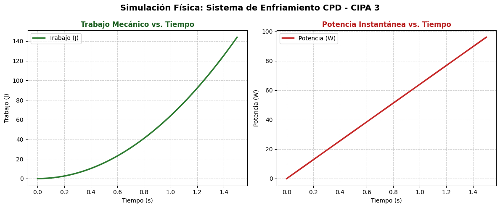

Asignatura: Física I (Convocatoria 1)
CIPA 3:
Daniel Alejandro Pertuz Tamayo
Juan José Hernández
De las opciones disponibles en la guía de la Convocatoria 1, el CIPA 3 ha seleccionado:
Enfoque orientado al análisis dinámico de flujos de aire y sistemas mecánicos aplicados a la infraestructura de hardware.
La física y la ingeniería están profundamente conectadas en el diseño y la optimización de infraestructuras tecnológicas modernas.
En un Centro de Procesamiento de Datos (CPD), un ventilador axial de alta eficiencia expulsa calor del rack principal. El aire contenido en el ducto de extracción posee una masa m = 2.5 kg de aire acumulado por ciclo. Si el sistema ejerce una fuerza constante de empuje F = 45 N a lo largo de una distancia de desplazamiento horizontal d = 3.2 metros dentro del ducto antes de disiparse al exterior, y este proceso se realiza en un intervalo de tiempo Δt = 1.5 segundos partiendo del reposo:
Preguntas a resolver:
Fórmulas fundamentales aplicadas en el sistema de ventilación:
Evaluación de la energía transferida por la fuerza de empuje al desplazar el flujo de aire:
Valores previos y especificación:
Desarrollo y Sustitución:
Cálculo de la rapidez con la que el sistema efectúa el trabajo mecánico en el intervalo de tiempo:
Valores previos y especificación:
Desarrollo y Sustitución:
Análisis del cambio en la cantidad de movimiento del flujo de aire al ser expulsado:
Valores previos y especificación:
Desarrollo y Despeje:
Automatización del cálculo físico mediante modelado en Python:
import numpy as np
import matplotlib.pyplot as plt
# Datos del problema CPD
F = 45.0 # Fuerza en Newtons
d = 3.2 # Distancia en metros
m = 2.5 # Masa en kg
dt = 1.5 # Tiempo en segundos
# Cálculos físicos
W = F * d
P = W / dt
v_f = (F * dt) / m
print(f"Trabajo: {W} J | Potencia: {P} W | Velocidad: {v_f} m/s")
Validación Física Casera: Montaje práctico basado en polea fija, carro guía y masa colgante para simular la fuerza de tracción constante y contrastar mediciones con el cronómetro y el metro.
Resultados automáticos: